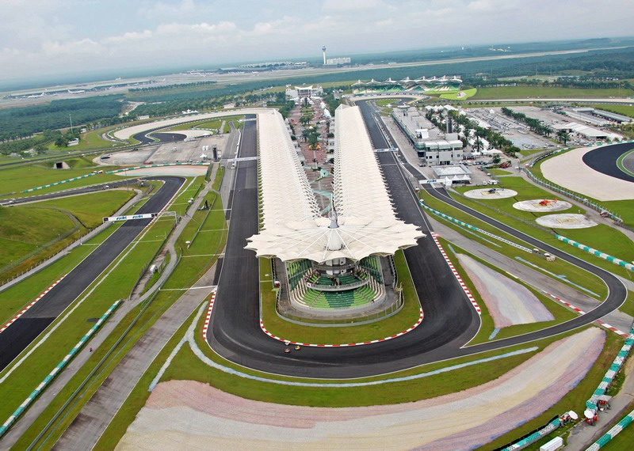
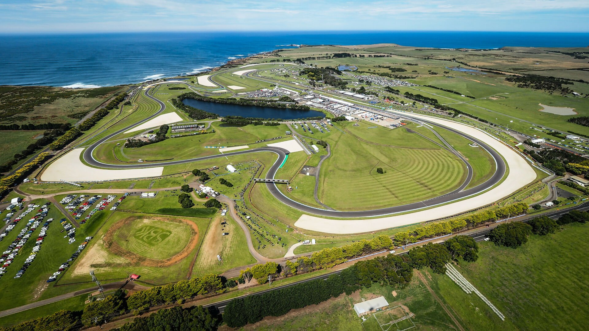
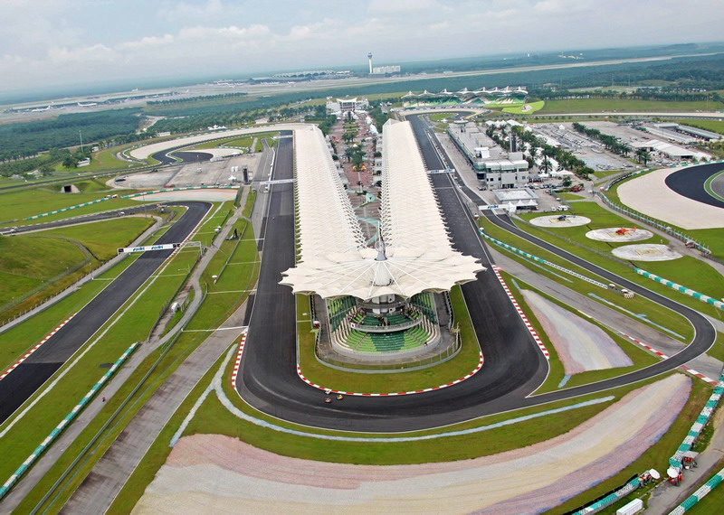
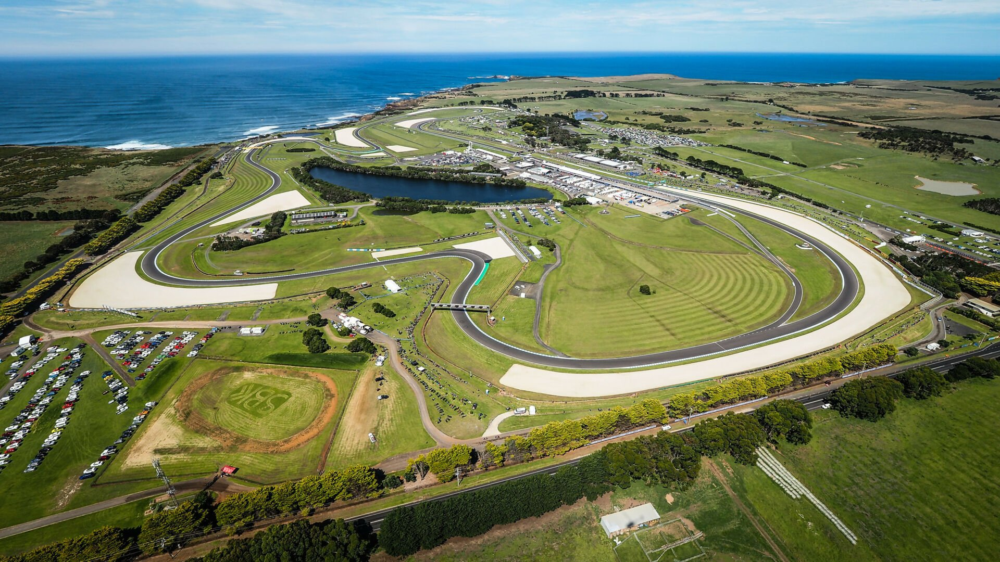

Valentino Rossi
Rider veteran dengan banyak podium—ahli di trek kering dan tikungan cepat.

Ikuti update balapan, profil rider, dan highlights setiap seri. Tetap terhubung dengan kecepatan.
Profil singkat beberapa rider teratas musim ini.
Rider veteran dengan banyak podium—ahli di trek kering dan tikungan cepat.
Pendatang baru yang agresif, kuat di start dan strategi pit yang cerdik.
Kecepatan luar biasa di trek lurus, lawan sulit dalam sprint akhir.
Sirkuit Mandalika • Lombok
Sirkuit Sepang • Sepang
Sirkuit Philip Island • Victoria
 



Masukkan email untuk mendapatkan update langsung ke inbox Anda.